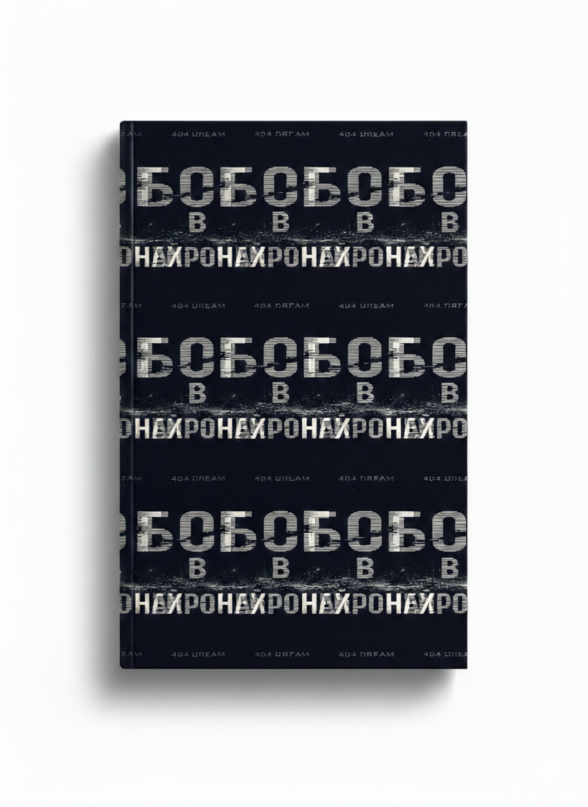

Практикум по книге
Рабочая тетрадь и трекер на 30 дней. Помогает закрепить знания: упражнения, поля для ответов, чек-листы.
19 €
Скоро
Понять себя, выйти из автопилота, изменить сценарии. Практическая книга о сознании, памяти, эмоциях и внимании.

Читать / скачать бесплатноСлушайте главы по порядку или выбирайте нужную в списке. После окончания главы следующая включится автоматически.
Вы не одиноки. Мы постоянно ловим себя на одних и тех же вопросах и тупиках. Книга «Бог в нейронах» показывает, откуда они берутся — и даёт инструменты для выхода.
Это не академический трактат, а разговор в тихом кафе. Автор сочетает нейронауку, психологию, философию и практики. Вы узнаете, как мозг создаёт чувство «я» и как выходить из автоматических связей. Книга приглашает не только читать, но и проживать: делать паузы, задавать вопросы и замечать, что отзывается.
Для всех, кто хочет жить внимательнее и глубже. Она подойдёт и тем, кто никогда не задумывался о сознании, и тем, кто практикует медитацию, ведёт дневник или занимается терапией. Не нужно академического бэкграунда — достаточно желания услышать себя.
Рабочая тетрадь и трекер на 30 дней. Помогает закрепить знания: упражнения, поля для ответов, чек-листы.
20+ аудио-треков на 3–12 минут: короткие паузы, проводники по эмоциям, памяти, сну и интеграции.
Закрытый телеграм-канал с ежедневными заданиями, поддержкой и созвонами. Дисциплина и интеграция.
Да. Вы можете скачать полную версию бесплатно или оставить любую сумму. Знание не должно зависеть от статуса и денег.
Практикум создан как продолжение: он работает лучше вместе с книгой. Но если вам ближе формат упражнений, можно начать и с него.
Ежедневные задания (10–15 мин), чат поддержки, еженедельные созвоны. Вы закрепляете навыки внимания, памяти, работы с эмоциями и осознанным сном.
Если вы ищете быстрые техники для манипуляций или ждёте академическую монографию. Это приглашение к процессу, а не таблетка.
Даниил Лауреанти — исследователь сознания, нейронауки и философских идей. Книга собрана из чтения, наблюдений, разговоров и личного опыта. Автор не претендует на окончательную истину, он идёт рядом как внимательный проводник.
Вы можете читать книгу линейно или выборочно. Главное — делать паузы и замечать, как меняется взгляд на себя и мир. Начните сейчас.
Читать / скачать бесплатно